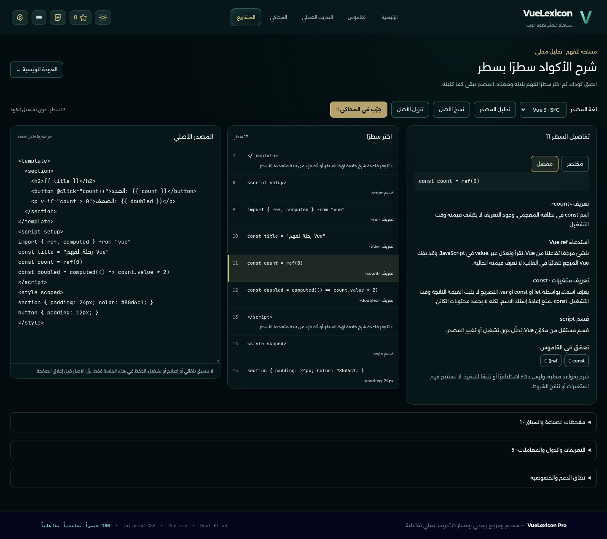
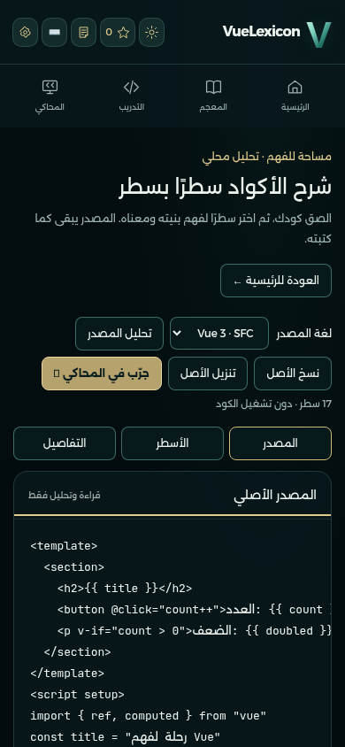
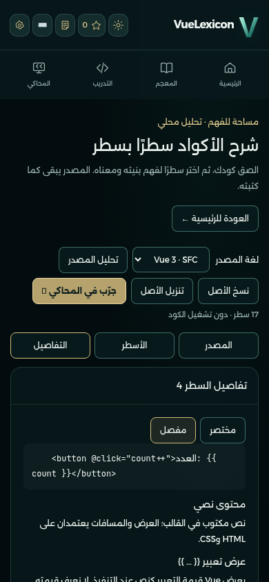
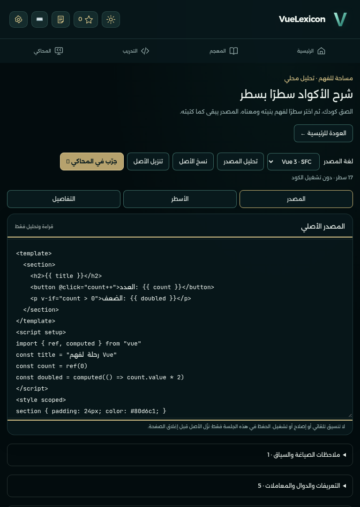
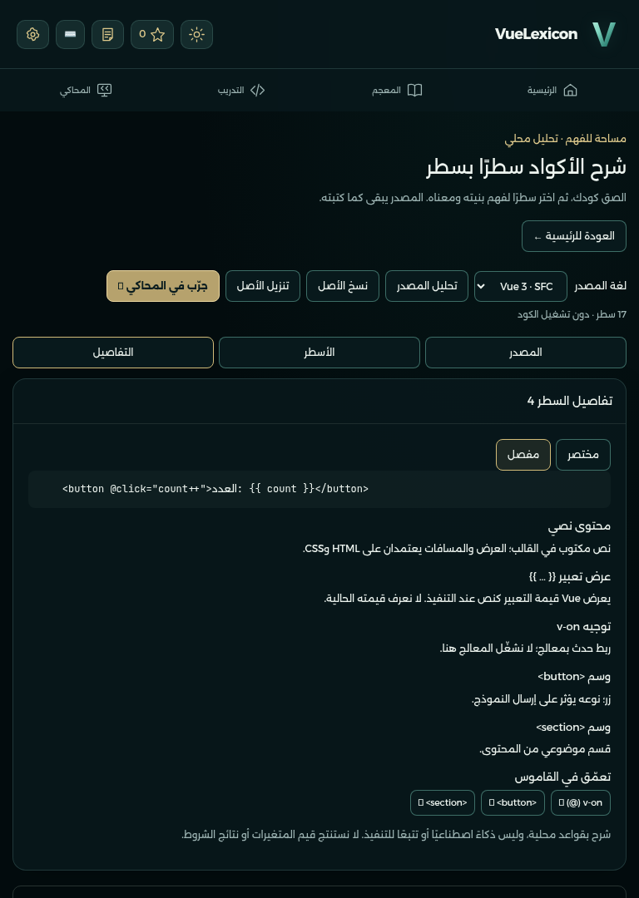
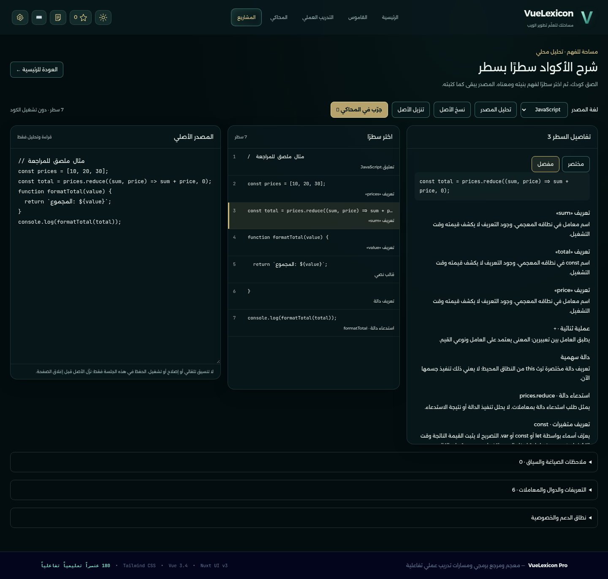

صور وتسجيل متصفح فعلي، وتحليل ثابت محلي بقواعد عربية؛ لا تنفيذ أو ذكاء اصطناعي في صفحة الشرح. المصادر الظاهرة أمثلة ملصقة للمراجعة، وليست إضافة إلى المنهج الأصلي.


الجوال: المصدر والتبويبات

الجوال: تفاصيل السطر

التابلت: المصدر

التابلت: التفاصيل

المصدر لا يُحفظ عبر إعادة التحميل؛ يمكن تنزيل الأصل. الأسماء الخارجية تحتاج سياقًا ولا تعني خطأ تنفيذ مؤكدًا. قيودHTML5 وCSS وTypeScript وNuxt والتتبع موضحة في التقرير. لا دمج أو نشر موقع.